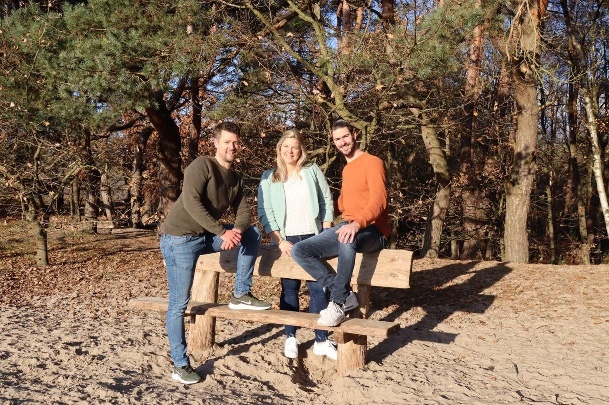
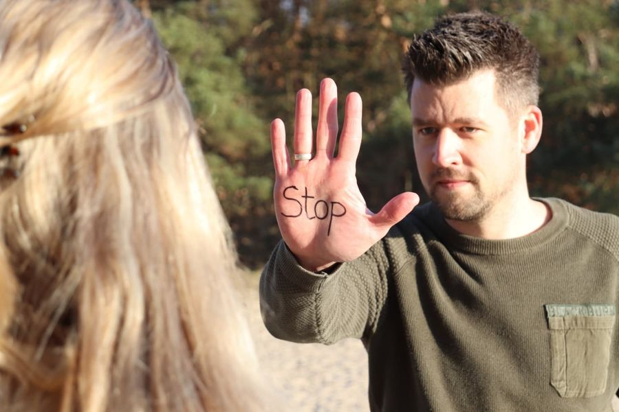
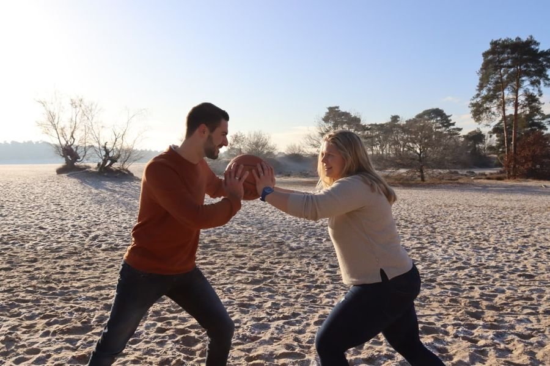
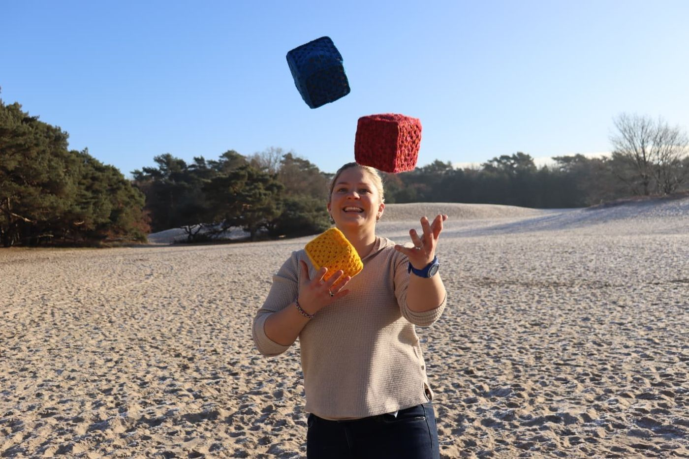
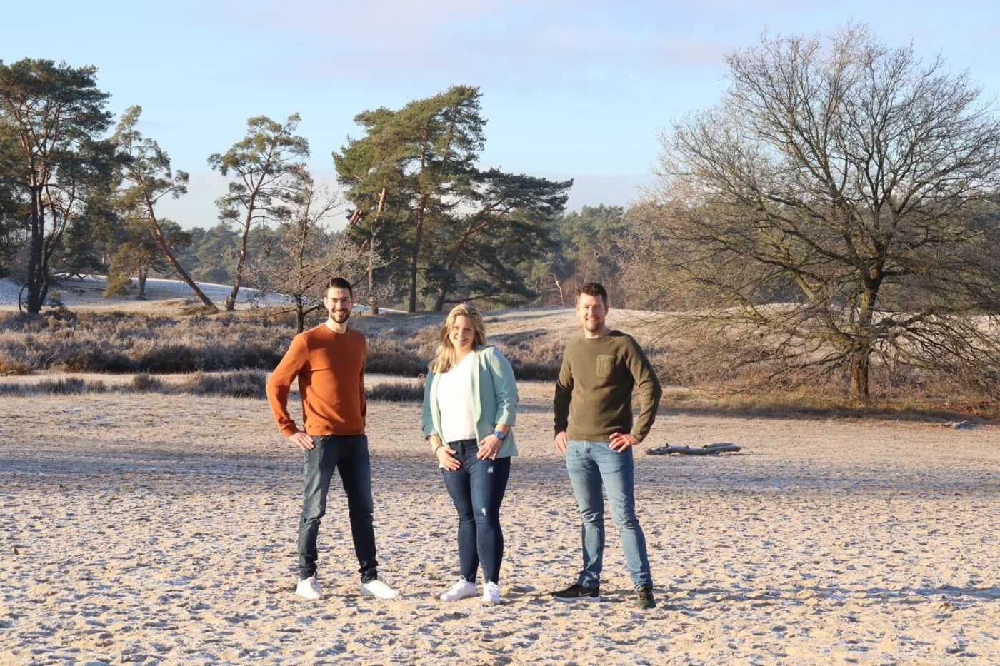
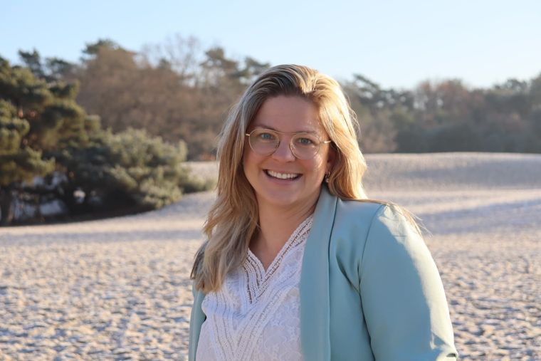
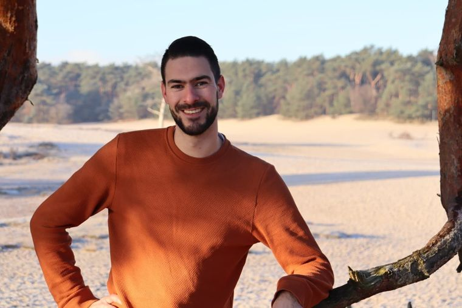
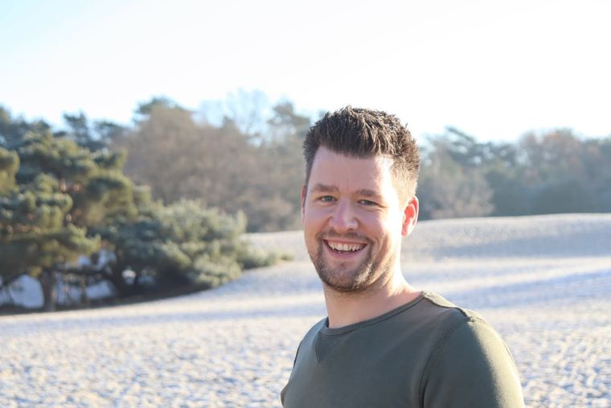
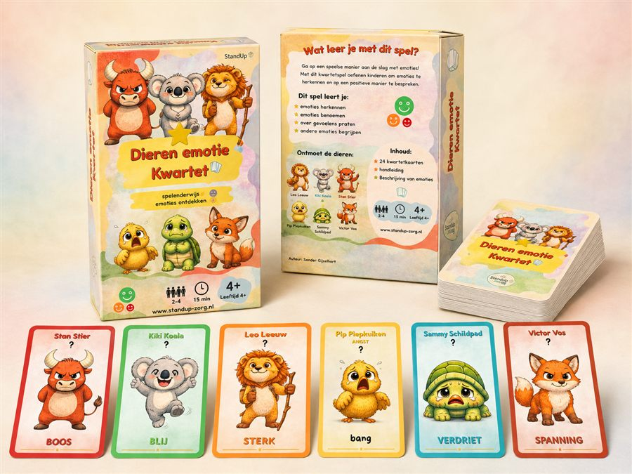

Wij staan op waar anderen blijven zitten
Standup Zorg biedt psychomotorische therapie, weerbaarheidstraining, bewegingsagogie en coaching. Persoonlijk, ervaringsgericht en afgestemd op wat jij nodig hebt.

Kies jouw route
Soms weet je lijf het eerder dan je hoofd
Veel mensen die bij ons komen, herkennen zich in een van deze situaties. Klinkt er iets bekend? Dan kijken we graag met je mee.
- Omgaan met spanning, boosheid of angst
- Meer zelfvertrouwen willen ontwikkelen
- Grenzen leren voelen en aangeven
- Vastgelopen patronen willen doorbreken
- Meer plezier ervaren in bewegen
- Beter samenwerken of communiceren in een groep
Ondersteuning op maat
Standup Zorg biedt psychomotorische therapie (PMT), weerbaarheidstraining, bewegingsagogie en coaching. Persoonlijk, ervaringsgericht en afgestemd op wat jij nodig hebt.

Psychomotorische therapie
Een lichaams- en bewegingsgerichte behandeling. Je leert jezelf beter kennen door te ervaren en te doen.
Lees meer →
Weerbaarheid
Grenzen aangeven, "stop" zeggen en voor jezelf opkomen, veilig oefenen in de praktijk.
Lees meer →
Bewegingsagogie
Werken aan fysieke en mentale gezondheid via doelgerichte beweging. Voor elke leeftijd en elk niveau.
Lees meer →
Coaching & workshops
Bewegen is de sleutel tot welzijn. Praktische inzichten die je aanzetten tot actie.
Lees meer →Van kennismaking naar het dagelijks leven
Kennismaken
Een vrijblijvend gesprek: wat speelt er en wat zoek je?
Doelen bepalen
Samen stellen we duidelijke, haalbare doelen op.
Doen & ervaren
Niet alleen praten: bewegen, oefenen en voelen wat er gebeurt.
Reflecteren
We staan stil bij wat je merkt en welke patronen zichtbaar worden.
Vertalen naar thuis
Het geleerde krijgt een plek in je dagelijks leven, thuis, op school of op werk.

Persoonlijk, praktisch en blijvend
- Persoonlijk maatwerk, geen standaardaanpak, maar wat bij jou past.
- Specialistische kennis, geregistreerde vaktherapeuten en ervaren begeleiders.
- Ervaringsgericht, denken, voelen en handelen verbinden door te doen.
- Blijvend resultaat, nadruk op de vertaling naar je dagelijkse praktijk.
- Samen, waar helpend betrekken we ouders, netwerk of begeleiding.
De mensen achter Standup Zorg

Lucinda Looijenga
Gedreven, open en positief. Kijkt samen met jou naar wat belangrijk is en haalt daar het beste uit.

Sander Gijselhart
Sociaal en actief, met humor en betrokkenheid. Voelt goed aan waar jij behoefte aan hebt.

Sander Zijdewind
Geduldig en creatief. Zet mensen in hun kracht en helpt je je stem te durven gebruiken.
Voor onze cliënten is PMT een mooie aanvulling op het behandelaanbod. Door vooral te doen en te ervaren leren cliënten zichzelf beter kennen en luisteren naar hun eigen behoeften. Standup Zorg denkt met ons mee!
Groepstrajecten, workshops en maatwerk
Van groepstherapie en weerbaarheidstrajecten tot workshops en teamcoaching, wij werken samen met begeleiding en behandelaren, met heldere afstemming en evaluatie.
Duidelijkheid vooraf
Individuele PMT € 95 per sessie, weerbaarheid & bewegingsagogie € 85. Vergoeding is soms mogelijk via aanvullende verzekering, PGB, Wmo of Jeugdwet.

Dieren Emotie Kwartet
Een kwartetspel, ontwikkeld door Standup Zorg, waarmee kinderen vanaf 4 jaar spelenderwijs emoties leren herkennen en benoemen. Voor thuis, in de klas of in therapie.
€ 21,99 incl. verzending
Bekijk het Dieren Emotie KwartetBespreek vrijblijvend wat passend is
Twijfel je welke vorm past? Neem contact op, we denken graag met je mee, zonder verplichtingen.